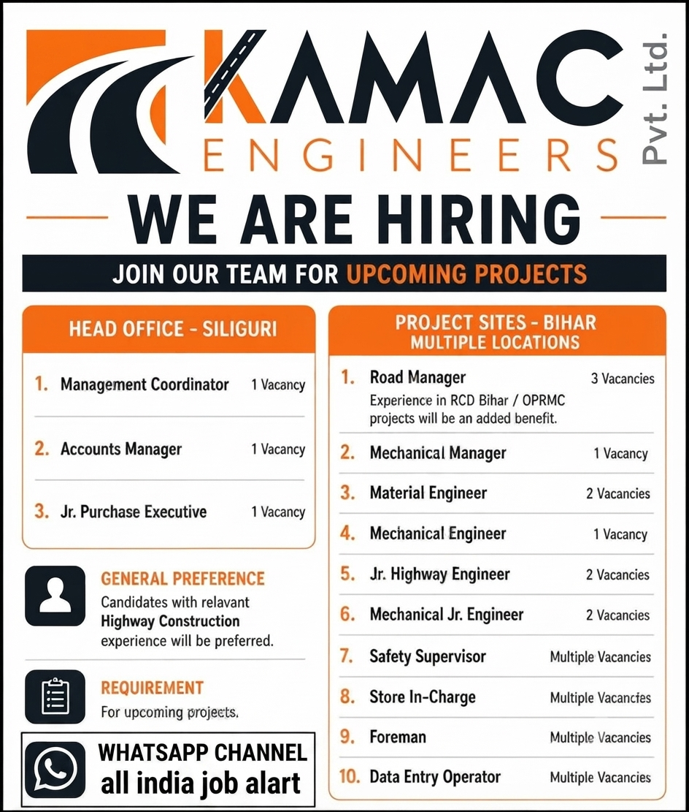

Multiple Job Openings for Upcoming Construction Projects

KAMAC Engineers Pvt. Ltd. has announced multiple employment opportunities for experienced professionals who are interested in working on upcoming construction and infrastructure projects. The company is looking for suitable candidates for its head office operations as well as project sites located in Bihar. These openings can be a valuable opportunity for professionals with experience in highway construction, civil engineering, mechanical work, project execution, safety, stores, procurement and project administration.
The recruitment drive includes positions ranging from management and engineering roles to supervisory and support positions. Candidates who have relevant experience in construction projects, especially highway and infrastructure projects, may have an advantage during the selection process. Applicants should carefully review the job positions and ensure that their qualifications and experience match the requirements before sending their updated CV.
Construction and infrastructure projects require professionals from many different departments to work together. Project managers coordinate overall activities, engineers supervise technical execution, mechanical professionals manage equipment and machinery, safety professionals maintain safe working conditions, and stores teams ensure the availability of materials and equipment. KAMAC Engineers is currently looking for professionals who can contribute their skills and experience to these important areas.
| S.No. | Position | Vacancies |
|---|---|---|
| 1 | Management Coordinator | 1 Vacancy |
| 2 | Accounts Manager | 1 Vacancy |
| 3 | Jr. Purchase Executive | 1 Vacancy |
| 4 | Road Manager | 3 Vacancies |
| 5 | Mechanical Manager | 1 Vacancy |
| 6 | Material Engineer | 2 Vacancies |
| 7 | Mechanical Engineer | 1 Vacancy |
| 8 | Jr. Highway Engineer | 2 Vacancies |
| 9 |